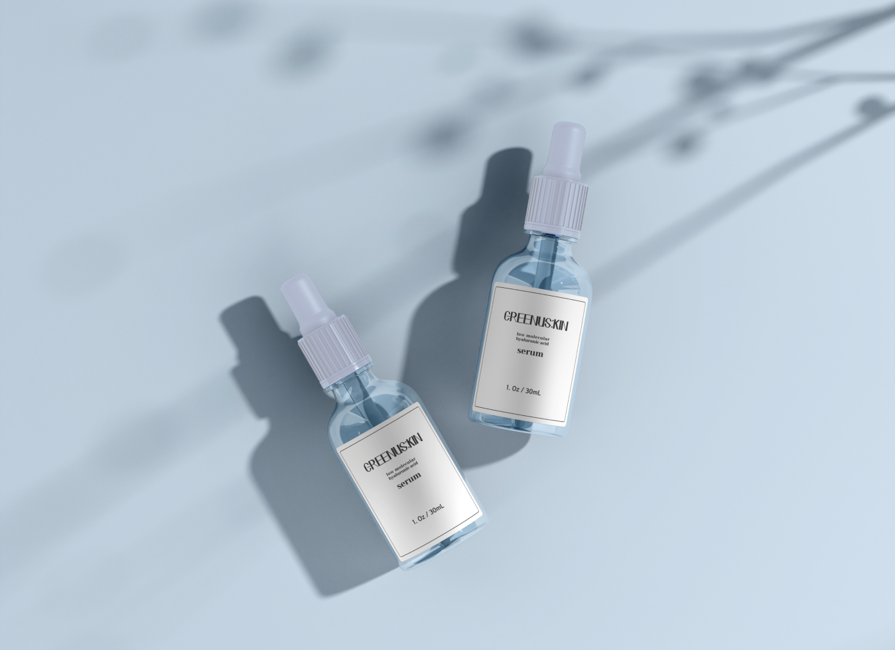
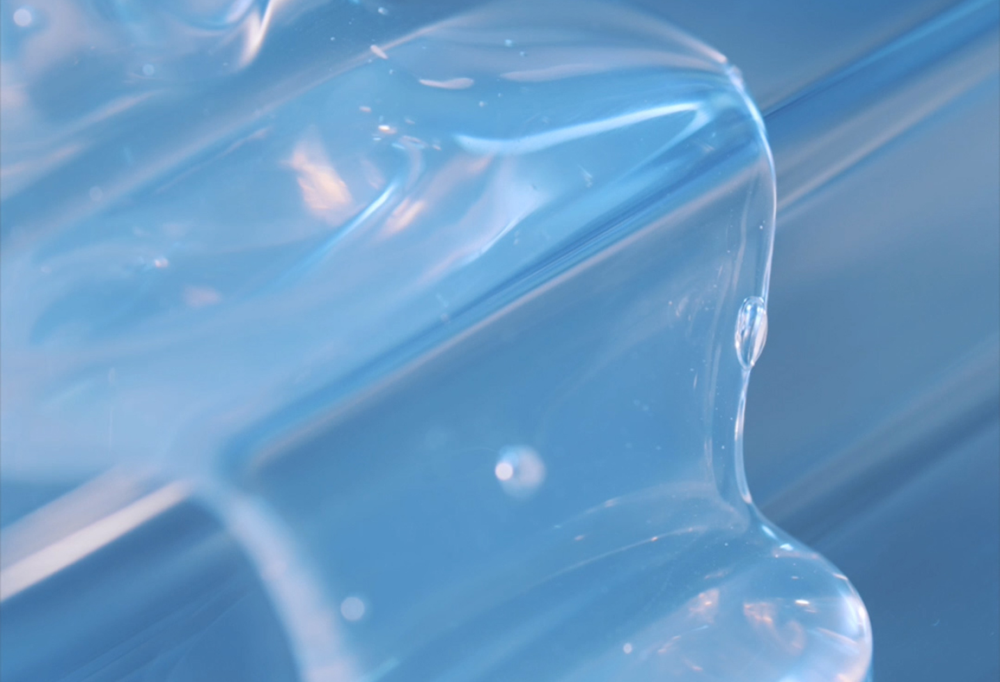
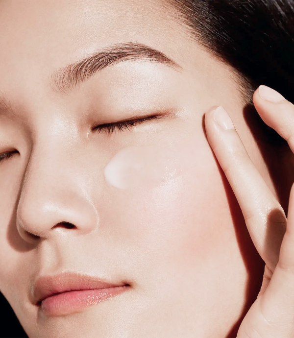

Hyaluronic Acid Serum

Greenuskin Low Molecular Hyaluronic Acid Serum
그린어스킨 저분자 히알루론산 세럼
히알루론산 특유의 끈적임과 답답함없이
속부터 채워지는 산뜻 촉촉한 수분감을 느껴보세요.
히알루론산을 머금은 하늘빛 세럼이
피부에 산뜻하게 스며들어
메마르기 쉬운 피부 속까지 당김없이
촉촉하게 수분을 채워줍니다.
모든 피부에 부담없이 사용가능합니다.

Low Molecule
5D Hyaluronic Acids
히알루론산이 피부에 더 잘 흡수될 수 있도록
분자크기가 다른 5가지 히알루론산을 배합했습니다.
5가지 고-중-저분자 히알루론산이
피부 겉부터 속까지 촘촘하게 수분을 충전해줍니다.

Subacidity
Formula
건강한 피부는 약산성입니다.
그린어스킨의 저분자 히알루론산 세럼은
약산성 포뮬러로
건강하고 편안한
피부환경을 유지하도록 도와줍니다.
It's not sticky
It's more moist
기본적인 수분관리만으로도
피부는 건강해질 수 있습니다.
수분관리는 필요하지만 부담스러운 피부를 위해,
모든 피부에 부담없는 사용감으로
밀리거나 끈적임 없이 수분충전을 도와드립니다.